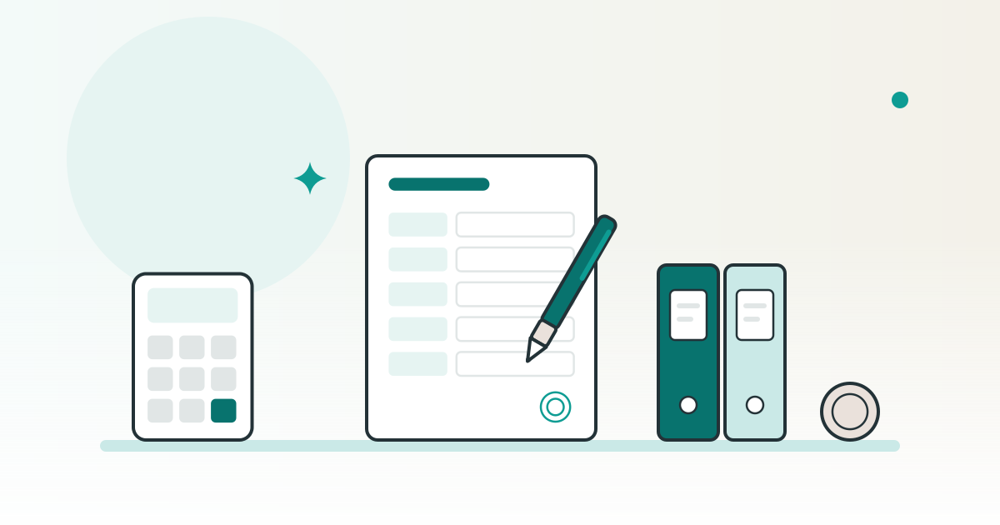

SHOPKIT コラム
ネットショップの確定申告副業の売上・経費と、勤め先や家族への影響

副業のお店に注文が入り始めたら、税の手続きも気になります。まずは売上や支出の資料をまとめ、自分の状況で必要な申告を窓口で確かめましょう。ネットショップの記録から相談までの流れと、勤め先・家族について分けて確認したい点を説明します。
この記事は、完成品のネットショップを販売している SHOPKIT が書いています。
申告の要否は、給与とお店の資料をそろえて確認する
国税庁は、給与を受け取る人の確定申告について、給与の受け取り方や給与以外の所得などに応じた条件を案内しています。この案内が対象にしているのは所得税です。副業のお店の売上額だけを見て、申告の要否を決めないようにしましょう。
出典：国税庁給与所得者で確定申告が必要な人。
相談前には、給与の源泉徴収票、お店の売上と支出の資料、そのほかの収入について説明できる資料をまとめます。給与を受け取っていない場合も、その状況を伝えて、自分に必要な確認から始めましょう。
国税庁の事業所得の説明では、総収入金額と必要経費を分けて、所得を求める考え方が示されています。売上、所得、口座に入った金額を同じものとして扱わず、何の金額か分かる記録を用意することが大切です。
出典：国税庁事業所得の課税のしくみ。自分のお店の所得の区分や必要な申告は、事実関係を伝えて税務署などへ確認します。
注文・入金・支出を、取引ごとにたどれる形にする
日々の記録は、後から取引の内容を説明できるように残します。注文の明細、決済の明細、銀行の入出金、仕入れの請求書や領収書を、同じ取引へたどれる形でまとめましょう。
- 売上の記録には、取引日、注文番号、商品、金額と、元の明細がある場所を残す。
- 入金の記録は、どの注文に対応するか、差し引かれた手数料があるかを明細と照らす。
- 支出の記録には、支払先、内容、金額、お店の何に使ったかを残す。
- 取消しや返金、まだ入金されていない取引は、その経過も分かるようにする。
国税庁の必要経費の説明では、収入に対応する原価や、その収入を得るための直接の費用、業務に関する費用などが挙げられています。私生活とお店の両方に関係する支出は、記録によって業務に直接必要だった部分を明確に分けられることが条件です。
出典：国税庁必要経費の知識の概要・家事関連費の注意事項。
仕入れ、配送、梱包、決済などの支出も、名前だけで経費になると決めず、何のための支払いかを説明できるようにします。家の通信費などと混ざる支出は、利用内容をメモにし、分け方を相談しましょう。
お金を払った年と経費にする年が一致するか、手元に残る商品をどう扱うかも、記録を見せて確認したい点です。帳簿の付け方、電子の明細を含む保存の方法や期間は、国税庁の案内と窓口で確かめてください。
所得税の確認と、住民税・就業規則の確認を分ける
住民税については、住んでいる市区町村の税の窓口へ相談しましょう。所得税について相談した結果と、給与やお店の資料を伝え、住民税で必要な手続きがあるかを尋ねます。
国税庁は、所得税の確定申告の情報が地方公共団体へ送られることと、住民税で異なる控除などを受ける場合には別の申告が必要になることがあると説明しています。所得税の説明を、そのまま住民税の手続きの判断に使わないようにしましょう。
出典：国税庁所得税等の申告に関するQ&Aの住民税・事業税の申告。
勤め先との関係は、就業規則を確認します。ネットショップで行う活動が、勤め先の副業に関する規則でどう扱われるかを確かめましょう。税の手続きと、勤め先の規則を、それぞれ確認する予定にしておきます。
関連：会社員が副業でネットショップを始めるには｜就業規則・時間・税金
家族への影響は、税・健康保険・年金ごとに尋ねる
「扶養に入っているから大丈夫か」とまとめて尋ねるより、どの制度の何を知りたいのかを分けましょう。家族との相談用にも、お店の活動内容、売上や支出の記録、現在加入している制度が分かる資料を用意します。
国税庁の配偶者控除の案内には、控除を受ける人と配偶者についての条件があります。家族の税に影響するかを知りたい場合は、お店の記録に加えて家族の状況も伝え、税務署などへ確認しましょう。
出典：国税庁配偶者控除。金額の基準だけで自己判断せず、対象の年分と条件を確かめます。
健康保険の扶養については加入先の保険者へ、年金については日本年金機構の相談窓口へ、確認する内容を分けます。家族の勤務先の手当が気になる場合は、その手当の規則も確認しましょう。
日本年金機構の加入手続きの案内では、年金の区分に応じた手続きが説明されています。配偶者に扶養される人の手続きには、配偶者の勤務先を通じて行うものもあります。自分に該当する手続きは、現在の加入状況を伝えて確かめてください。
出典：日本年金機構国民年金の加入手続き。相談先は全国の相談・手続き窓口から確認できます。
関連：専業主婦が在宅で副業を始める前に｜家族と決めること・確かめる窓口
公的窓口への相談は、質問と資料を組にして準備する
相談では、どの申告や届出が必要か、どの記録を使うか、いつまでに何をするかを確かめます。判断に迷う取引は、内容が分かる明細を添えて質問をまとめましょう。
国税庁は、一般的な税の相談にタックスアンサーや電話相談を案内しています。書類や具体的な事実の確認が必要な相談などは、所轄税務署での面接相談の対象となり、事前の予約が必要です。
出典：国税庁国税の相談方法。相談の方法と、必要な持ち物を公式の案内で確かめてください。
質問のメモには、対象の年、給与などお店以外の状況、取引の内容、知りたい手続きを書きます。回答を受けたら、相談日、窓口、追加で必要な資料、次に行うことを残しましょう。別の窓口にも相談する場合は、それまでの回答を説明できるようにしておきます。
開業届は、確定申告とは別の手続きとして確認する
国税庁の開業届の案内は、新たな事業の開始などについての届出を扱っています。確定申告は、所得税などを申告する手続きです。開業届を出す予定や提出した記録も相談時に伝え、それぞれ必要な対応を確認しましょう。
出典：国税庁個人事業の開業・廃業の届出、前掲の給与所得者向け確定申告の案内。
届出や申告の期限、必要な書類は対象の年や手続きの最新案内で確かめます。お店の開始日や販売内容、これまでに提出した書類を一覧にし、日々の取引の記録と合わせて見返せる形にしておきましょう。
関連：ネットショップの開業届はいつ出す？副業・個人事業主の手続き
よくある質問
ネットショップの確定申告を相談するとき、どんな記録を用意しますか？
給与の資料と、お店の注文・入金・支出をたどれる明細をまとめます。そのほかの収入や判断に迷う取引も伝え、必要な追加資料を窓口で確認しましょう。
副業のお店を始めた後、家族の扶養のことはどこに相談しますか？
税は税務署など、健康保険は加入先、年金は日本年金機構へ、知りたい内容を分けて確認します。家族の勤務先の手当については、その手当の規則も確かめます。
ネットショップの開業届を出せば、確定申告も済んだことになりますか？
開業届と確定申告は、別の手続きとして確認します。事業を始めた時期や提出済みの書類を伝え、自分の状況で必要な対応を窓口で確かめましょう。
※ 公的資料は2026年10月28日に確認しました。この記事は相談までの一般的な流れを示すものです。申告・経費・扶養などの個別の判断は、資料を用意して各窓口で確かめてください。最新の制度や期限は、対象の年分の公式案内をご確認ください。